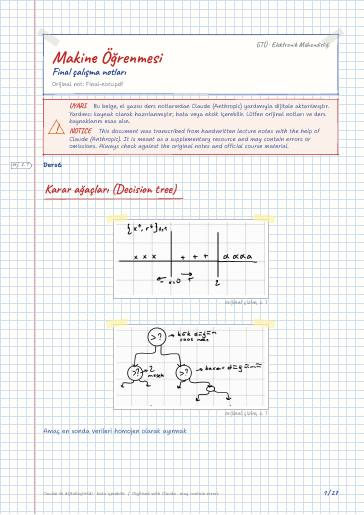

Makine Öğrenmesinin Temelleri · Dijital ders notu
Final çalışma notları
- Ders
- Makine Öğrenmesinin Temelleri (ELM472)
- Dönem
- 7. Dönem · 2024–2025 Güz
- Biçim
- PDF · 27 sayfa · 0,8 MB · el yazısı görünümlü LaTeX
- Orijinal not
- Final-notu.pdf

The digital notes were created from the handwritten notes with the help of Claude (Anthropic); they are meant as a supplementary resource and may contain errors. Always rely on the original notes and the official course materials.
Bu notta neler var?
- Karar ağaçları (Decision tree)
- Saflık ölçütleri (Impurity measures)
- Regresyon ağaçları
- Avantajları
- Dezavantajları
- Ensemble Learning
- Bagging
- Boosting
- Adaboost
- Boyut Azaltma
- (1) Feature selection
- (2) Subset Selection
- (3) PCA (Principle component Analysis)
- Feature Embedding
- Singular Value Decomposition
- LDA (Linear discriminant Analysis)
- Başka yöntem
- Sigmoid
- Back Propagation
- Activation layers
- (1) softmax
- (2) Relu
- (3) Leaky Relu
- (4) tanh
- Transfer learning
- Time series prediction
- Patlayan Gradyan (Exploding Gradient)
- Yok olan Gradyan (Vanishing Gradient)
- LSTM
- Encoding
- NLP (Natural language processing)
- TF-IDF
- Word2Vec
- Global vectors for word Representation (Glove)
- Attention Mechanism
- ELMO: Embeddings from language model
- RNN
Notun metni
Düz metin olarak göster (formüller ve çizimler yoktur)
Karar ağaçları (Decision tree)
Amaç en sonda verileri homojen olarak ayırmak
Saflık ölçütleri (Impurity measures):
en saf durum tek bir olasılığın 1 kalması
Entropy: arasında değerler alır
Tek bir sınıf varsa entropy'nin çok sınıf varsa max olur
dallanırken max entropy nerdeyse ordan devam et
while ε > γ threshold dallan
Metrik olarak varyans kullanılabilir veya L_1 kullanılabilir. (Goodness of split)
L_1 norm aykırı değerlere hassasiyeti az
Basittir. Görsel temsili kolaydır
Açıklanması en kolay makine öğrenmesi
Hem sınıflandırma hem regresyon için kullanılabilir
Doğrusal olmayan ilişkileri bulabilir
Overfitting: Çok sayıda düğümden oluşuyor ise overfitting olabilir
Kararsızlık: Verilerdeki ufak değişiklik tamamen farklı bir ağaç oluşmasına neden olabilir
1- overfitting için budama yapılabilir
Ön budama: önceden max derinlik vererek ağacın uzaması engellenir
Son budama: Tam gelişmiş ağaçtan önemli katkı sağlamayan dallar kaldırılır
100 tane karar ağacı alırım, yeni bir örnek geldiği zaman ortalama yapıyorum böylece kestirimcinin varyansı küçülür.
Baggingte olan eğitim seti alt eğitim setlerine bölünür. Her veri setiyle Model eğitilir, böylece alt veri setleri kadar model oluşturulur. Tahminlerin birleştirilmesi aşamasında regresyon ağaçları için ortalama alınırken sınıflandırma ağaçlarında sonuçlar oylama ile belirlenir.
Boosting: Verinin özel bir bölgesine oturan daha iyi bir sınıflandırıcı varsa bu şekilde
f_i(x), i\0,…,M (Aynı modelin parametrelerini değiştirip linear kombinasyonlarını kullanıyoruz)
verinin hangi bölgesinde hangi fonksiyon daha iyi
Bu modelde eğitim kümesi önce zayıf öğrenici ile eğitilir. Eğitim sonrası yanlış olarak tahminlenen örnekler bu algoritma için önemlidir. Bir sonraki eğitimde ilk tahminlemede yanlış öğrenilen eğitim verilerine daha fazla öncelik verilerek yani ağırlıkları arttırılarak tekrar eğitilir.
while not converge:
(3) PCA (Principle component Analysis)
Singular Value Decomposition
LDA (Linear discriminant Analysis)
türevini alıp 0'a eşitlenerek regresyon
Bu sefer iteratif olarak ilerliyoruz
sonra bunu ekleyeceğiz, geri
Sonsuza giderken türev 0 o yüzden iyi çalışmaz. Bu yüzden genelde softmax en son katmanda kullanılır
a=b şeklinde gösteriyoruz (non-linear)
negatif tarafta yine türev 0, dead neuron sorununa yol açıyor (Vanishing gradient)
bunda da türevler +∞ , -∞ da 0'a yaklaşıyor
tek bir layer kullanmaz
kernel size, filtre sayısı
Feature extraction için çok kullanılır
Odaklanıp işimize yarayacağımız verilerin her şeyi bundan değil.
feature extraction: Öznitelik çıkarma
Özniteliklerin konumlarından bağımsız
eğitimi göre daha zor
Elimizdeki veriler ne kadar kaliteliyse o kadar kolay sınıflandırıcımız olur. Yolo feature extraction'ı çok iyi yapıyor ve iyi parçalara ayırıyor
Time series prediction
Patlayan Gradyan (Exploding Gradient):
Geri yayılım sırasında gradyanlar çok büyük değerlere ulaşır ve bu durum ağırlıkların aşırı güncellenmesine neden olur. Modelin kararsız hale gelmesine yol açar. Eğitim süreci başarısız olur
Yok olan Gradyan (Vanishing Gradient):
Geriye yayılım sırasında gradyanlar çok küçük değerlere düşer. Bu durumda ağırlıklar güncellenemez ve model, özellikle uzun dizilerde zaman bağımlılıklarını öğrenemez.
Nedeni ise RNN geri yayılım sırasında zincir kuralını kullanır. Bu süreçte zincirleme türev alınır:
ham bir veriyi sayıya çevirmek
One hot Encoding
gözetimsiz olarak entropy kullanılır
king - man = queen - woman
en basit şekilde nasıl vektöre çeviririm
bazı çok kullanılan kelimeler var
NLP (Natural language processing)
Morfolojik gitmek istersek ( göre)
Benim adım Mehmet.
Kelimelere bölerek word piece
Morfolojik gramere göre
One hot encoding
Elimizde dokümanlar var
Tüm dökümanlarda iki kelime aynı frekansla geçmemeli
CBOW Continuous Bag of Words
Skip gram / n-gram 2 gram iki komşuluk
tersten de yapabiliriz
Global vectors for word Representation (Glove)
i'inci döküman, j'inci kelimenin geçme frekansı
bunu bulmaya çalışıyoruz, kelimenin ağırlığı
Covid geldi yeni kelime
Benim adım Mehmet / Seq 2 Seq Supervised
My name is Mehmet sonraki güncellemede LSTM
Bu metin kısa olmadıktan sonra context'i yakalayamıyor.
kelimeleri hidden layerle çarpıyoruz
hangi kelime ne kadar önemli.
Sonra döngü yerine MLP koyuyoruz
BERT: Sadece Encoder, kelimeleri öğrenebilen
BERT: Bidirectional Encoder Representations from Transformers
ELMO: Embeddings from language model
I university bus run
Bunun adı self attention
Makalelerde böyle görürsünüz
→ Multihead ile olabilir
k: Ne ile ilgili
bunu × W_1 → positional encoding matris
Gelecekte alacağım ödüllerin toplamı
Policy gradient theorem
Actor critic (value, policy birleşimi)
Multi agent reinforcement learning